| ・ オーバーホール (R01.01.12) | |||
ぼちぼち10年になる回流水槽（小）のポンプをオーバーホールです。作った先輩は小柄でしたが、 今使っている2人は180 cm越えているので狭小作業はかなり大変でした。 |
|||
|
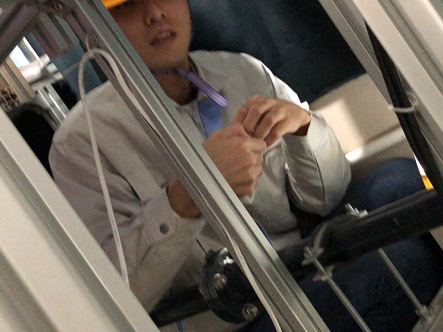
痩せててよかった |
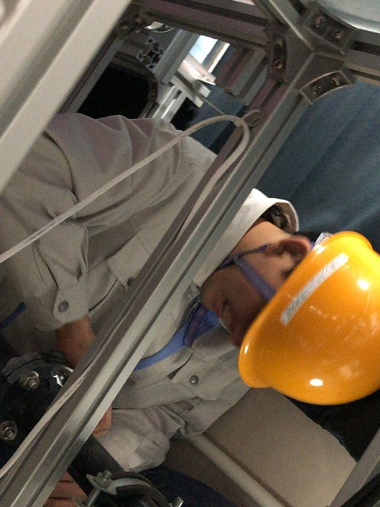
ボルト締結箇所確認 | ||
|
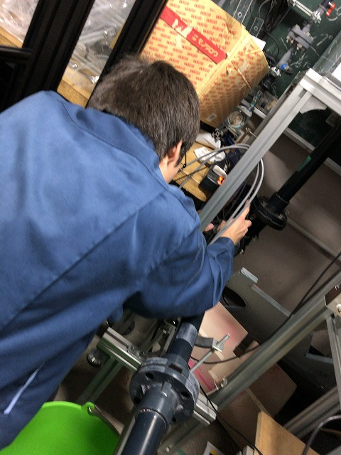
現状確認 |
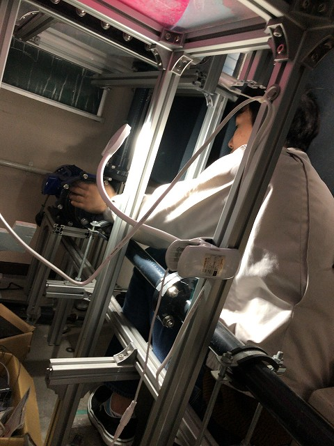
ちょっと振動ありか | ||
|
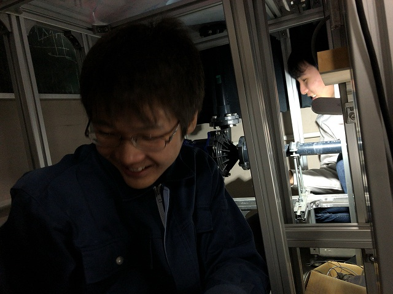
暗くて見えない |
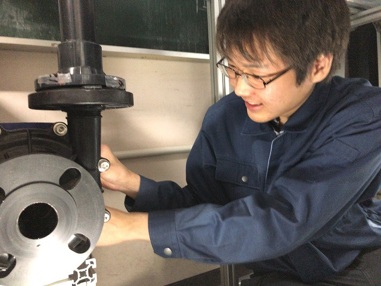
谷先輩のライト設置 | ||
|
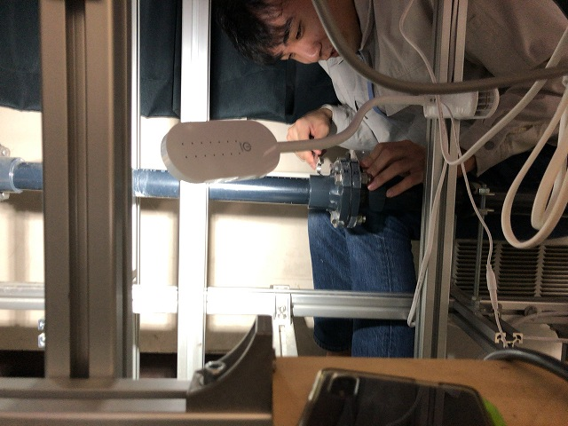
せまい |
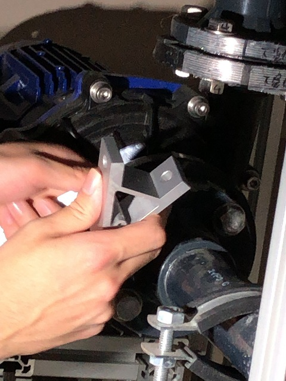
ブラケットを治具がわりに | ||
|
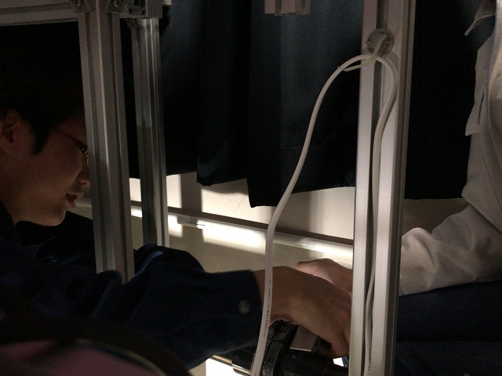
協力 |
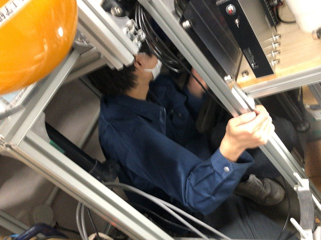
せまいなぁ | ||
|
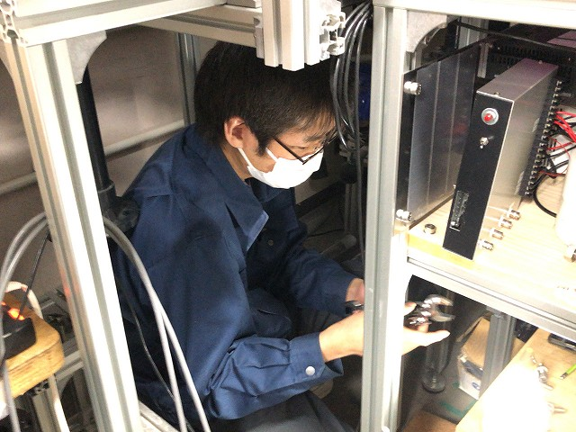
ぼちぼち完了 |
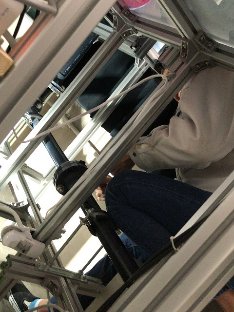
ポンプ降ろす | ||
|
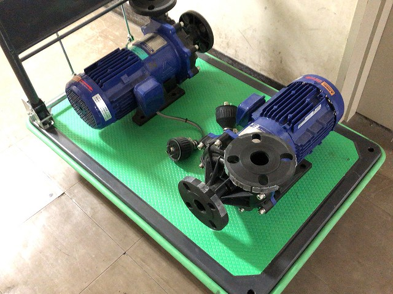
いつ帰ってくるのか？ |
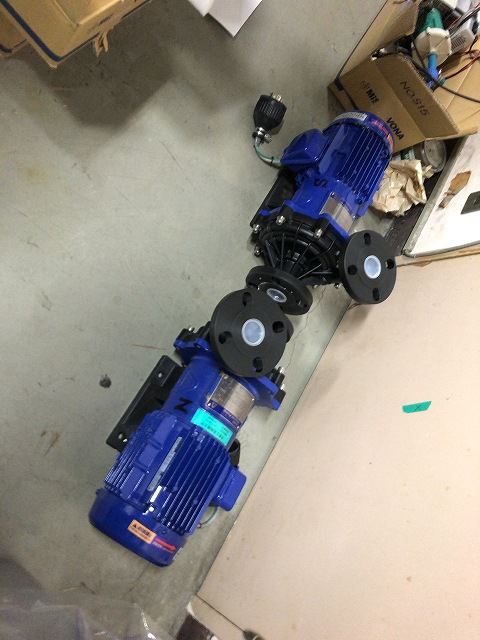
結局3月9日に戻ってきて、組み付けは12日に完了 | ||